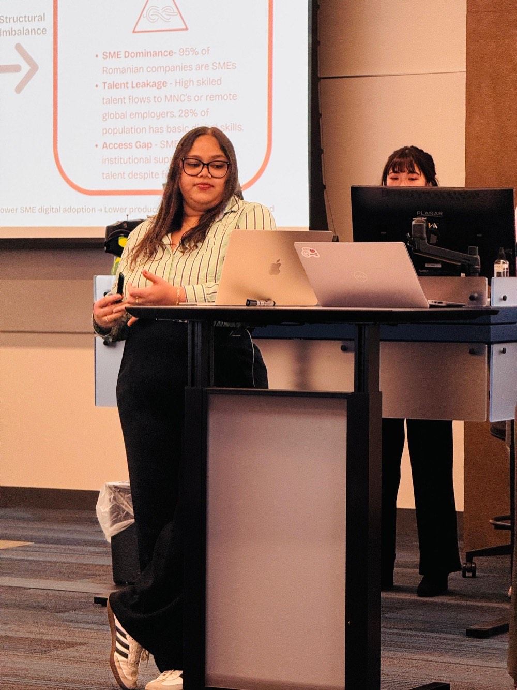

About
Marketing, strategy, and analysis across four years and five markets.

Two years ago I left India and moved to the US for my Master's, no small leap at 28 when it felt like everyone else already had a five-year plan. Since then I've closed CRM gaps for EuropeLab, built go-to-market strategy for Hexafort, and grown marketing pages from zero at Thunderbird, always chasing the same question: what's actually working, and why?
Outside of work I dance, film little videos of my life and travels, and I'm somewhere deep into a West Wing rewatch. I speak four languages, used to do karate, and like fashion more than is probably useful. Starting over at thirty taught me I have more grit than I give myself credit for, mostly borrowed from my parents' optimism.
Let's talk shop, swap show recommendations, or just connect.